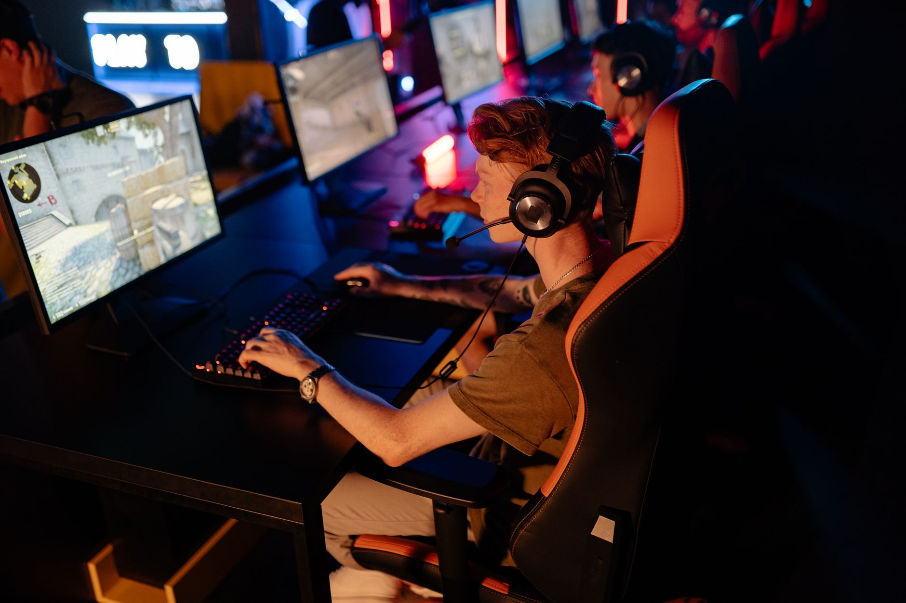

A blow to the Astralis lineup
The esports world is buzzing with news regarding the upcoming Singapore Major, and unfortunately for Astralis fans, it is not the news they were hoping for. Reports are circulating that cmtry, a vital component of the Astralis tactical framework, is expected to miss the prestigious tournament. This development comes at a critical juncture for the organization as they attempt to solidify their standing among the world's elite teams.
The timing of this absence could not be worse. Major championships are the pinnacle of professional Counter-Strike, where every single player's performance is magnified under intense global scrutiny. Losing a key player right before the event creates a vacuum in team chemistry and tactical execution that is notoriously difficult to fill on short notice.
The connection to FUT's Bucharest exit
The rumors surrounding cmtry's absence seem to be closely linked to the recent performance and subsequent exit of FUT in Bucharest. As teams navigate the complex web of player transfers, standby rosters, and tournament scheduling, the domino effect of one team's exit often impacts the roster stability of others. The quarter-final exit in Bucharest has triggered a series of logistical and personnel shifts that are now rippling through the professional scene.
While the exact technical reasons for the absence have not been fully detailed by the organization, the connection to the Bucharest tournament suggests a period of intense restructuring. In the high-stakes environment of professional gaming, a single loss in a major tournament can lead to a complete overhaul of how organizations manage their talent and upcoming schedules.
The volatility of professional rosters during Major cycles is one of the most challenging aspects for fans and analysts to track.
Challenges facing the Singapore Major
Preparing for a Major requires months of dedicated practice, specific tactical preparation, and, most importantly, team cohesion. When a player like cmtry is sidelined, the team is forced to pivot their entire strategy. They must integrate a substitute or a different player into a system that was designed around specific roles and playstyles.
The Singapore Major will be a testing ground for how Astralis handles this adversity. If they can navigate this period and still perform at a high level, it will speak volumes about the depth of their coaching staff and the resilience of the remaining roster members.
Looking at the broader roster trends
This isn't the first time we have seen major organizations undergo sudden transformations. The current era of esports is defined by rapid movement. Players are frequently moved to optimize performance, and sometimes, these moves happen just days before a major event begins. This creates a sense of constant flux that keeps the community engaged but leaves teams in a state of perpetual rebuilding.
We have seen similar patterns in other top-tier organizations where a single vacancy leads to a cascade of roster changes. Teams are no longer just looking for the best individual players, but for the most compatible pieces to fit into a specific strategic puzzle. As the competitive meta evolves, so must the way teams construct their lineups.
Comparing recent roster movements
To understand the scale of what Astralis is facing, one only needs to look at how other teams have handled sudden departures. For instance, we recently analyzed how other organizations have attempted to stabilize their presence in the competitive scene through strategic replacements.
A perfect example of this kind of strategic maneuvering can be seen in our recent coverage of the Legacy team. You might find it interesting to read about how Ksloks Joins Legacy: Replacing n1ssim in Roster Shakeup at https://dhyey.bond/blog/ksloks-joins-legacy-replacing-n1ssim-in-roster-shakeup/ to see how a different organization managed a similar transition to maintain their competitive edge.
Whether it is a planned replacement or an emergency substitution due to tournament circumstances, the goal remains the same: maintaining a level of play that can compete on the world stage. Astralis' ability to find a suitable replacement for cmtry will likely determine their fate in Singapore.
What to expect next
As the Singapore Major approaches, all eyes will be on Astralis' official announcements. The community is waiting to see if the team will utilize a veteran standby player or if they will attempt to promote a talent from their academy roster. Each choice carries significant risk and potential reward.
Stay tuned to Dhyey Bond for more updates on this developing story and all the latest news from the world of competitive gaming. We will continue to monitor the situation in Singapore and provide in-depth analysis as the tournament unfolds.
See Also
If you enjoyed this Esports News article, check out Ksloks Joins Legacy: Replacing n1ssim in Roster Shakeup for more useful reading.